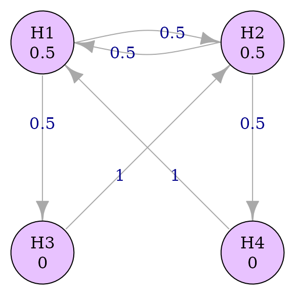

library(graphicalMCP)
library(lrstat)
library(gMCP)Introduction
graphicalMCP seeks to be the most comprehensive and flexible R package for graphical MCPs, but it is not the first. The packages gMCP and lrstat each cover portions of graphical MCPs. Here we provide a bit of validation against these existing packages.
Validation
The simple successive graph will be used to demonstrate equivalence between packages.
hypotheses <- c(.5, .5, 0, 0)
transitions <- rbind(
c(0, .5, .5, 0),
c(.5, 0, 0, .5),
c(0, 1, 0, 0),
c(1, 0, 0, 0)
)
ss_graph <- graph_create(hypotheses, transitions)
plot(ss_graph, vertex.size = 60)
gMCP
gMCP is the pioneer R package for graphical MCPs, and it covers many common use cases. We’ll compare it to graphicalMCP for generating the weights of the closure, testing with Bonferroni and parametric testing, and power calculations using Bonferroni testing.
Generate weights
Weights of the closure are identical, besides a different order and different names.
graphicalmcp_weights <- graph_generate_weights(ss_graph)
dimnames(graphicalmcp_weights) <- list(NULL, NULL)
gmcp_weights <- generateWeights(ss_graph$transitions, ss_graph$hypotheses)
all.equal(gmcp_weights, graphicalmcp_weights[15:1, ])
#> [1] TRUEBonferroni adjusted p-values
p <- c(.001, .019, .01, .05)
graphicalmcp_test_bonf <- graph_test_shortcut(ss_graph, p)
gmcp_test_bonf <- gMCP(as_graphMCP(ss_graph), p, alpha = .025)
all.equal(graphicalmcp_test_bonf$outputs$adjusted_p, gmcp_test_bonf@adjPValues)
#> [1] TRUEParametric adjusted p-values
Parametric adjusted p-values are calculated at different precision between packages.
test_corr <- rbind(
c(1, .5, NA, NA),
c(.5, 1, NA, NA),
c(NA, NA, 1, NA),
c(NA, NA, NA, 1)
)
graphicalmcp_test_para <-
graph_test_closure(ss_graph, p,
test_groups = list(1:2, 3:4),
test_types = c("p", "b"),
test_corr = list(test_corr[1:2, 1:2], NA))
gmcp_test_para <- gMCP(as_graphMCP(ss_graph), p,
alpha = .025,
correlation = test_corr)
all.equal(
round(graphicalmcp_test_para$outputs$adjusted_p, 10),
round(gmcp_test_para@adjPValues, 10)
)
#> [1] TRUEBonferroni power
The packages use slightly different simulation methods, which leads to slight differences in power.
marginal_power <- c(.8, .8, .7, .7)
noncentrality_parameter <-
qnorm(1 - .025, lower.tail = TRUE) -
qnorm(1 - marginal_power, lower.tail = TRUE)
sim_corr <- matrix(.5, 4, 4)
diag(sim_corr) <- 1
set.seed(92123)
graphicalmcp_power <- graph_calculate_power(ss_graph,
power_marginal = marginal_power,
sim_corr = sim_corr,
sim_n = 2^17)
set.seed(92123)
gmcp_power <- calcPower(ss_graph$hypotheses, .025, ss_graph$transitions,
mean = noncentrality_parameter,
corr.sim = sim_corr,
n.sim = 2^17)
print("Power differences")
#> [1] "Power differences"
structure(
lapply(
seq_along(gmcp_power),
function(index) gmcp_power[[index]] - graphicalmcp_power$power[[index]]
),
names = names(graphicalmcp_power$power)[1:4]
)
#> $power_local
#> H1 H2 H3 H4
#> -5.340576e-05 -6.637573e-04 -2.136230e-03 -2.143860e-03
#>
#> $power_expected
#> [1] -0.004997253
#>
#> $power_at_least_1
#> [1] 0.0002670288
#>
#> $power_all
#> [1] -0.002151489Parametric power
set.seed(92123)
graphicalmcp_power_para <-
graph_calculate_power(ss_graph,
test_groups = list(1:2, 3:4),
test_types = c("p", "b"),
test_corr = list(test_corr[1:2, 1:2], NA),
power_marginal = marginal_power,
sim_corr = sim_corr,
sim_n = 2^13)
set.seed(92123)
gmcp_power_para <- calcPower(ss_graph$hypotheses, .025, ss_graph$transitions,
corr.test = test_corr,
mean = noncentrality_parameter,
corr.sim = sim_corr,
n.sim = 2^13)
print("Power differences")
#> [1] "Power differences"
structure(
lapply(
seq_along(gmcp_power_para),
function(index) {
gmcp_power_para[[index]] - graphicalmcp_power_para$power[[index]]
}
),
names = names(graphicalmcp_power_para$power)[1:4]
)
#> $power_local
#> H1 H2 H3 H4
#> 0.0048828125 -0.0012207031 0.0039062500 0.0003662109
#>
#> $power_expected
#> [1] 0.00793457
#>
#> $power_at_least_1
#> [1] 0.002563477
#>
#> $power_all
#> [1] 0.001220703lrstat
lrstat is not primarily focused on graphical MCPs, but it does include functions to generate weights and run Simes testing, which makes it a good validation complement to gMCP.
Generate weights
graphicalmcp_weights <- graph_generate_weights(ss_graph)
lrstat_weights <- fwgtmat(ss_graph$hypotheses, ss_graph$transitions)
all.equal(lrstat_weights, unname(graphicalmcp_weights[, 5:8]))
#> [1] TRUESimes adjusted p-values
graphicalmcp_test_simes <- graph_test_closure(ss_graph, p,
test_groups = list(1:2, 3:4),
test_types = c("s", "b"))
family <- rbind(
c(1, 1, 0, 0),
c(0, 0, 1, 0),
c(0, 0, 0, 1)
)
lrstat_test_simes <- fadjpsim(
fwgtmat(ss_graph$hypotheses, ss_graph$transitions),
p,
family
)
all.equal(
unname(graphicalmcp_test_simes$outputs$adjusted_p),
lrstat_test_simes
)
#> [1] TRUESimes power
lrstat doesn’t have a built-in MCP power function, but it can
calculate many adjusted p-values quickly if given a matrix of p-values.
Here we simulate p-values the same way as
graph_calculate_power() and demonstrate that results are
the same.
set.seed(92123)
graphicalmcp_power_simes <-
graph_calculate_power(ss_graph,
power_marginal = marginal_power,
test_groups = list(1:2, 3:4),
test_types = c("s", "b"),
sim_corr = sim_corr,
sim_n = 1e5)
noncentrality_parameter <-
qnorm(1 - .025, lower.tail = TRUE) -
qnorm(1 - marginal_power, lower.tail = TRUE)
# Simulate p-values the same way as graph_calculate_power()
set.seed(92123)
p_sim <- pnorm(
mvtnorm::rmvnorm(
1e5,
noncentrality_parameter,
sigma = sim_corr
),
lower.tail = FALSE
)
lrstat_p_adj_simes <- fadjpsim(
fwgtmat(ss_graph$hypotheses, ss_graph$transitions),
p_sim,
family
)
lrstat_power_simes <- colSums(lrstat_p_adj_simes <= .025) / 1e5
all.equal(
lrstat_power_simes,
unname(graphicalmcp_power_simes$power$power_local)
)
#> [1] TRUE